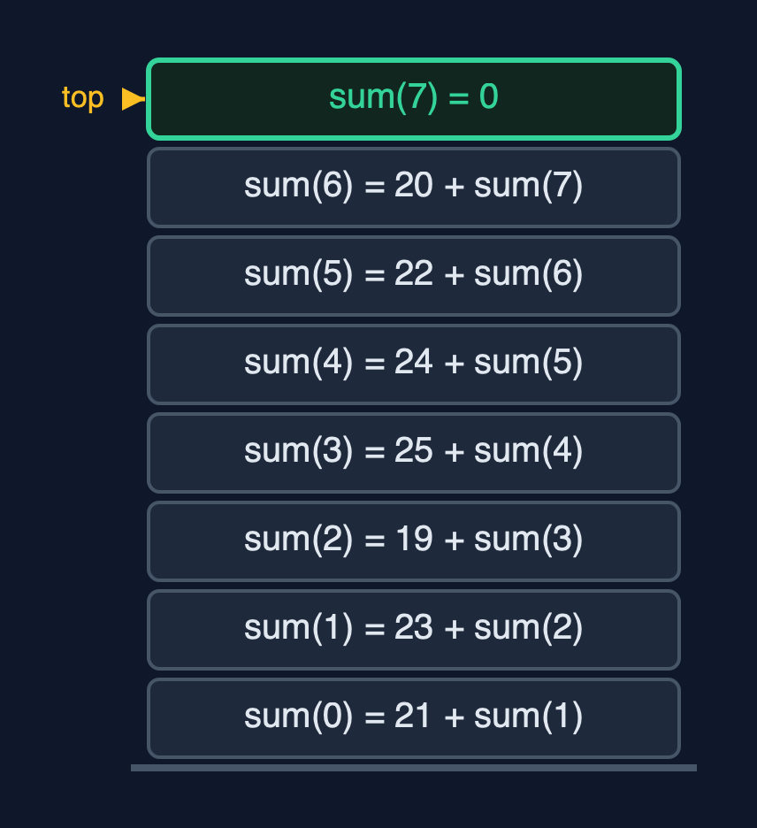
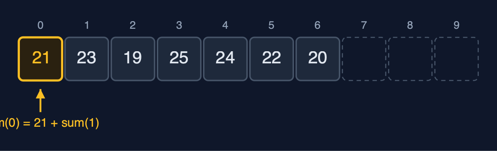
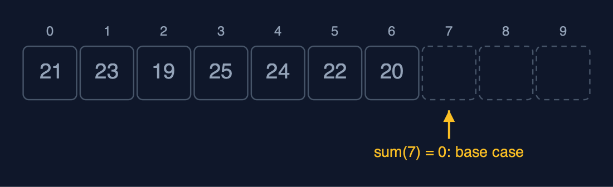
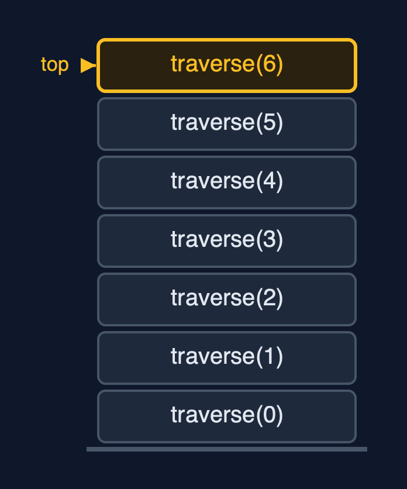
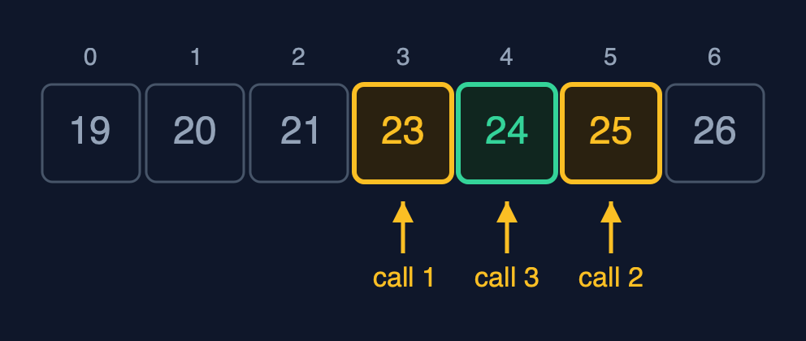
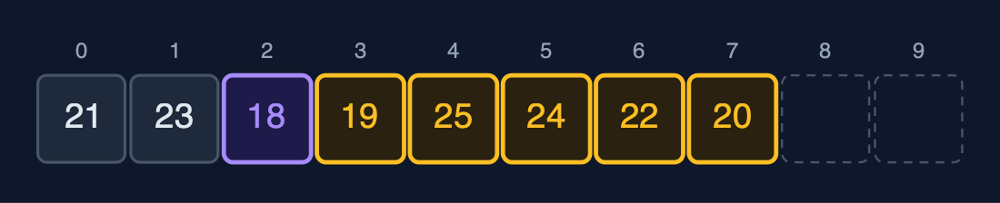
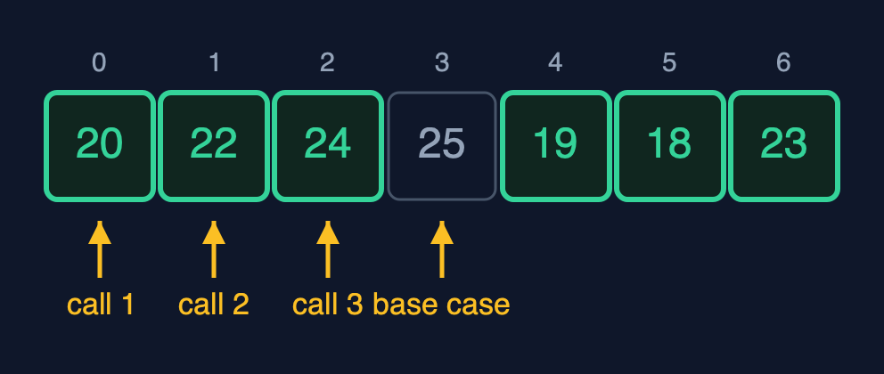
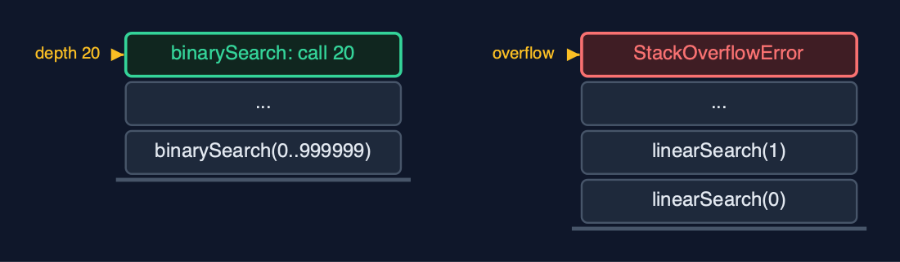

Static Array (Recursive), Explained
In one sentence
A recursive array operation handles one element, or one half, and calls itself for the rest until a base case; it does the same work as the loop but keeps one stack frame per waiting call, so its extra space is the recursion depth: O(n) for linear passes and O(log n) for binary search.
The picture

sum(0) waits for sum(1), which waits for sum(2) ... down to the base case sum(7) = 0
The everyday idea
Picture a queue of seven people, and you want the total of the money in their pockets. You ask the first person. They do not count everyone; they ask the person behind them "what is the total from you to the end?", and wait. That person asks the next, and waits too. The last person has nobody behind, so they answer straight away with their own amount: that is the base case. Then the answers travel back up the queue, each person adding their own amount before passing it on. While the question travels down, everyone is standing there waiting: seven people waiting is seven frames on the call stack.
The 5 acts
Act 1: Thinking recursively
The sum of the week can be defined in terms of a smaller sum: the sum from index i is arr[i] plus the sum from index i + 1. That definition needs a place to stop, the base case: when i reaches n there are no elements left, and their sum is 0. The demo prints each call as it happens: sum(0) = 21 + sum(1), sum(1) = 23 + sum(2), and so on until sum(7) = 0. Only then can the additions happen, from the bottom back up: 20 + 0, 22 + 20, and so on, to 154.

Going down: each call handles one element and asks for the sum of the rest Here are the calls going down. Sum of zero is twenty one, plus sum of one. But it cannot add yet. It must wait for sum of one. Sum of one waits for sum of two, and so on.

The base case: sum(7) = 0, because no elements are left At index seven there are no elements left. So sum of seven returns zero, without another call. That is the base case, and it is what stops the recursion. Now the answers travel back up, and each call adds its own element.
What the demo printed:
sum(0) = 21 + sum(1)
sum(1) = 23 + sum(2) ... sum(6) = 20 + sum(7)
sum(7) = 0 <- base case: no elements left
sum() = 154, after 7 calls waiting on the stack at onceAct 2: The call stack
Every call that has not returned keeps a stack frame: its own i and its own place in the code. Traversal visits arr[i] and calls itself for i + 1, so when it reaches the end, 7 frames are on the stack: the recursion depth is 7, one frame per element. That is the memory cost of recursion: O(n) extra space, where the loop used O(1). findMax shows the other direction of work: its base case is the last element, which is its own maximum, and each call compares its element with the maximum of the rest as the calls return. It finds 25 C at index 3, with 6 comparisons at depth 6.

Seven frames on the call stack, the newest on top Here is the call stack. The first call is at the bottom. Each new call is pushed on top. Seven calls, seven frames. When the top one returns, it is popped, and the one below continues.
What the demo printed:
traverse: [21, 23, 19, 25, 24, 22, 20]
call-stack depth 7: one frame per element, each waiting for the rest
findMax = index 3 (25 C): depth 6, 6 comparisons on the way back upAct 3: Searching recursively
Linear search written recursively: if the element at i is the key, return i; otherwise search from i + 1; if i reaches n, return -1. Finding 24 at index 4 takes 5 comparisons and 5 frames. Binary search is naturally recursive: compare with the middle element, then search only the half that can hold the key; an empty range, low > high, is the base case. On the sorted week [19, 20, 21, 23, 24, 25, 26] it compares with 23, then 25, then 24: 3 comparisons, 3 frames. Binary search's depth is its number of comparisons, about log2(n).

Recursive binary search for 24: search(0..6) at 23, search(4..6) at 25, search(4..4) finds it Binary search for twenty four. The first call looks at the middle, twenty three. Too small, so it calls itself on the right half. The second call looks at twenty five. Too big, so it calls itself on the left part. The third call finds twenty four. Three calls deep.
What the demo printed:
linearSearch(24) = index 4: 5 comparisons, depth 5
sorted [19, 20, 21, 23, 24, 25, 26]: binarySearch(24) = index 4, 3 comparisons, depth 3Act 4: Insertion, deletion and reversal, recursively
Shifting can be recursive too. insertAt(2, 18) calls shiftRight(6, 2), which moves arr[6] one place right and calls shiftRight(5, 2), and so on down to index 2; the base case is an index below the insertion position. Starting from the end keeps every element safe from being overwritten: 5 shifts at depth 5, and 18 is stored at index 2. deleteAt(0) calls shiftLeft(0), moving each later element one place left: 7 shifts at depth 7. reverse swaps the two ends and calls itself on the part between them; with 7 elements it swaps 3 pairs, 3 frames deep, and the middle element stays where it is.

insertAt(2, 18): shiftRight moved indexes 6 down to 2, one call each Here is the array after the insertion. Eighteen, in purple, is at index two. The five elements after it, in amber, were each moved by one call of shift right. Five calls, five frames.

reverse: swap the ends, then reverse the middle; the centre element stays Here is reverse. The first call swaps the two ends. The second call swaps the next pair in. The third call swaps the pair next to the middle. The middle element has nothing to swap with. That is the base case.
What the demo printed:
insertAt(2, 18): 5 shifts, depth 5; [21, 23, 18, 19, 25, 24, 22, 20]
deleteAt(0): 7 shifts, depth 7; [23, 18, 19, 25, 24, 22, 20]
reverse: 3 swaps, depth 3; [20, 22, 24, 25, 19, 18, 23]Act 5: The limit of recursion
The depth decides whether recursion is safe. On a sorted array of a million elements, recursive binary search needs 20 comparisons and 20 frames, because each call halves the range: O(log n) depth is always safe. Recursive linear search on the same array needs one frame per element, a million frames, and the call stack runs out first: Java throws a real StackOverflowError. The loop in the static-array project searches the million with O(1) extra space and finishes. Java does not remove tail calls, so even a tail-recursive method keeps every frame. The rule: recurse when the depth is logarithmic; loop over long linear passes.

Depth 20 against depth 1,000,000: the call stack holds the first, not the second Here are the two depths side by side. Binary search, twenty frames. Linear search, a million frames, far more than the call stack can hold. The work is similar in style. The depth is what matters.
What the demo printed:
binarySearch on 1,000,000: 20 comparisons, depth 20: halving keeps the stack small
linearSearch on 1,000,000: StackOverflowError, one frame per element
the same loop in the static-array project needs O(1) extra space and finishes
Java does not remove tail calls, so even tail-recursive code keeps every frameThe operations in code
Sum: the simplest recursion
/** The sum: arr[i] plus the sum of the rest. O(n) time and stack. */
public long sum() {
return sum(0);
}
private long sum(int i) {
if (i == n) {
return 0; // base case: the sum of no elements is 0
}
steps.enter();
steps.read();
long result = arr[i] + sum(i + 1);
steps.exit();
return result;
}The base case is i == n: the sum of no elements is 0. The recursive case adds arr[i] to the sum of the rest. The addition cannot happen until sum(i + 1) returns, so all seven calls wait on the stack together: depth 7, O(n) extra space, where the loop needed one variable.
Traversal
/** Traversal: element i, then the rest from i + 1. O(n) time, O(n) stack. */
public String traverse() {
StringBuilder s = new StringBuilder("[");
traverse(0, s);
return s.append(']').toString();
}
private void traverse(int i, StringBuilder s) {
if (i == n) { // base case: no elements left
return;
}
steps.enter();
steps.read();
if (i > 0) {
s.append(", ");
}
s.append(arr[i]);
traverse(i + 1, s); // recursive case: the rest of the array
steps.exit();
}The same shape as sum: visit element i, then traverse the rest. The recursive call is the last statement (tail recursion), but Java still keeps every frame.
Insertion at a position
/**
* Insertion at {@code pos}: shift arr[pos..n-1] right recursively, then store. The recursion
* starts at the last element, so each element is moved before its place is overwritten.
* O(n - pos) time and stack.
*
* @throws IllegalStateException "overflow" when the array is full
*/
public void insertAt(int pos, int value) {
if (isFull()) {
throw new IllegalStateException("overflow: the array is full (" + arr.length + " of " + arr.length + ")");
}
if (pos < 0 || pos > n) {
throw new IndexOutOfBoundsException("position " + pos + " outside 0.." + n);
}
shiftRight(n - 1, pos);
arr[pos] = value;
steps.write();
n++;
}
private void shiftRight(int i, int pos) {
if (i < pos) { // base case: every element from pos onwards has moved
return;
}
steps.enter();
arr[i + 1] = arr[i];
steps.shift();
shiftRight(i - 1, pos);
steps.exit();
}shiftRight(i, pos) moves arr[i] one place right and then shifts the elements before it; it starts at the last element, n - 1, so every element moves before its old place is overwritten, just as the loop runs from the end. The base case is i < pos: everything from pos onwards has moved. n - pos shifts, n - pos frames deep.
Deletion at a position
/**
* Deletion at {@code pos}: shift arr[pos+1..n-1] left recursively. O(n - pos) time and stack.
*
* @return the deleted element
* @throws IllegalStateException "underflow" when the array is empty
*/
public int deleteAt(int pos) {
if (isEmpty()) {
throw new IllegalStateException("underflow: the array is empty");
}
checkIndex(pos);
int deleted = arr[pos];
shiftLeft(pos);
n--;
return deleted;
}
private void shiftLeft(int i) {
if (i >= n - 1) { // base case: reached the last element
return;
}
steps.enter();
arr[i] = arr[i + 1];
steps.shift();
shiftLeft(i + 1);
steps.exit();
}The mirror image: shiftLeft(i) moves arr[i + 1] into arr[i] and recurses on i + 1, stopping at the last element.
Linear search
/** Linear search: is the key at i? If not, search from i + 1. O(n) time, O(n) stack. */
public int linearSearch(int key) {
return linearSearch(key, 0);
}
private int linearSearch(int key, int i) {
if (i == n) {
return -1; // base case: searched everything
}
steps.enter();
steps.compare();
int result = arr[i] == key ? i : linearSearch(key, i + 1);
steps.exit();
return result;
}Two base cases: i == n (searched everything, return -1), and a match (return i). Otherwise search from i + 1. Finding 24 at index 4 takes 5 calls; searching a million elements needs a million frames, and overflows.
Binary search
/** Binary search on a sorted array: search only the half that can hold the key. O(log n) time and stack. */
public int binarySearch(int key) {
return binarySearch(key, 0, n - 1);
}
private int binarySearch(int key, int low, int high) {
if (low > high) {
return -1; // base case: the range is empty
}
steps.enter();
int mid = low + (high - low) / 2;
steps.compare();
int result;
if (arr[mid] == key) {
result = mid;
} else if (arr[mid] < key) {
result = binarySearch(key, mid + 1, high);
} else {
result = binarySearch(key, low, mid - 1);
}
steps.exit();
return result;
}The base case is an empty range, low > high. Each call compares with the middle and calls itself on one half only, so the depth is at most about log2(n) + 1: 20 for a million elements. This is the recursion that is always safe to use.
Find maximum
/** The index of the largest element: the larger of arr[i] and the largest of the rest. O(n) time and stack. */
public int findMax() {
return n == 0 ? -1 : findMax(0);
}
private int findMax(int i) {
if (i == n - 1) {
return i; // base case: one element is its own maximum
}
steps.enter();
int restMax = findMax(i + 1);
steps.compare();
int result = arr[i] >= arr[restMax] ? i : restMax;
steps.exit();
return result;
}The base case is the last element, which is its own maximum. Every other call first finds the maximum of the rest, then compares it with its own element on the way back up, so the comparisons happen as the calls return.
Reversal
/** Reverses in place: swap the two ends, then reverse what is between them. O(n) time, O(n / 2) stack. */
public void reverse() {
reverse(0, n - 1);
}
private void reverse(int i, int j) {
if (i >= j) {
return; // base case: zero or one element in the middle
}
steps.enter();
int t = arr[i];
arr[i] = arr[j];
arr[j] = t;
steps.swap();
reverse(i + 1, j - 1);
steps.exit();
}Swap the two ends, then reverse the part between them. The base case is i >= j: zero or one element left in the middle. n / 2 swaps, n / 2 frames.
The operations, and what they cost
| Operation | What it does | Time: best / average / worst | Extra space (call stack) | Same operation as a loop | Steps counted in the demo |
|---|---|---|---|---|---|
| Traverse | Visit arr[i], then traverse from i + 1 | O(n) / O(n) / O(n) | O(n): depth n | O(1) | 7 reads, depth 7 |
Access get(i) | Return arr[i], by address calculation (not recursive) | O(1) / O(1) / O(1) | O(1) | O(1) | 1 step |
Update update(i, x) | Replace arr[i] (not recursive) | O(1) / O(1) / O(1) | O(1) | O(1) | 1 step |
Insert insertAt(pos, x) | shiftRight from the last element down to pos, then store x | O(1) at the end / O(n) / O(n) at the front | O(n - pos) | O(1) | 5 shifts at depth 5 to insert at index 2 of 7 |
Delete deleteAt(pos) | shiftLeft from pos up to the end | O(1) at the end / O(n) / O(n) at the front | O(n - pos) | O(1) | 7 shifts at depth 7 to delete index 0 of 8 |
| Linear search | Is the key at i? If not, search from i + 1 | O(1) / O(n) / O(n) | O(n) | O(1) | 5 comparisons at depth 5 to find 24 |
| Binary search (sorted) | Compare with the middle, search one half | O(1) / O(log n) / O(log n) | O(log n) | O(1) | 3 comparisons at depth 3; 20 at depth 20 on 1,000,000 |
| Find maximum | The larger of arr[i] and the maximum of the rest | O(n) / O(n) / O(n) | O(n) | O(1) | 6 comparisons at depth 6 |
| Sum | arr[i] plus the sum of the rest; 0 when none are left | O(n) / O(n) / O(n) | O(n) | O(1) | 154 at depth 7 |
| Reverse | Swap the two ends, reverse what is between them | O(n) / O(n) / O(n) | O(n / 2) = O(n) | O(1) | 3 swaps at depth 3 |
Compared with related structures
The recursive array against the same array written with loops (the static-array project), and against the related structures (n elements):
| Operation | Recursive static array | Iterative static array | Singly linked list |
|---|---|---|---|
| Access element i | O(1) time, O(1) space | O(1) time, O(1) space | O(n) time |
| Traverse, sum, maximum | O(n) time, O(n) stack | O(n) time, O(1) space | O(n) time |
| Linear search | O(n) time, O(n) stack | O(n) time, O(1) space | O(n) time |
| Binary search (sorted) | O(log n) time, O(log n) stack | O(log n) time, O(1) space | not possible: no middle to jump to |
| Insert or delete at the front | O(n) shifts, O(n) stack | O(n) shifts, O(1) space | O(1) |
| A million elements | linear recursion: StackOverflowError | fine | fine with loops |
| Code | matches the textbook definition | slightly longer, no stack cost |
The verdict
Learn recursion here, where it is easiest to trace, because trees, graphs and divide-and-conquer algorithms depend on it. In real code on arrays, use recursion when the depth is logarithmic, as in binary search, and loops for linear passes, which in Java would overflow the stack on large inputs.
How to recognise it in code you did not write
- A method that calls itself with
i + 1, or withlowandhighfor half the range. - An
ifat the top returning without a call: the base case. - A public method with fewer parameters that starts the recursion, such as
sum()callingsum(0).
Where you have already met this
- The definition of factorial: n! = n x (n - 1)!, with 0! = 1 as the base case.
- Any
StackOverflowErrorfrom a method that called itself with no base case. - Merge sort and quicksort, which recurse on halves of an array.